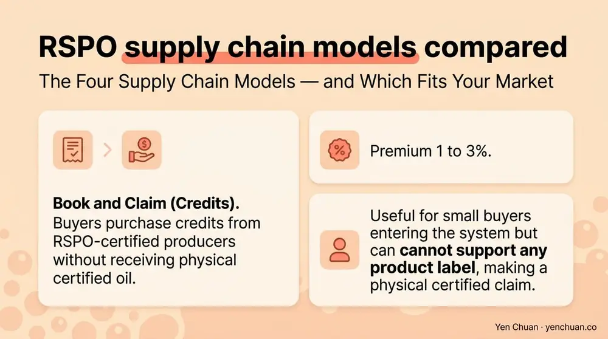
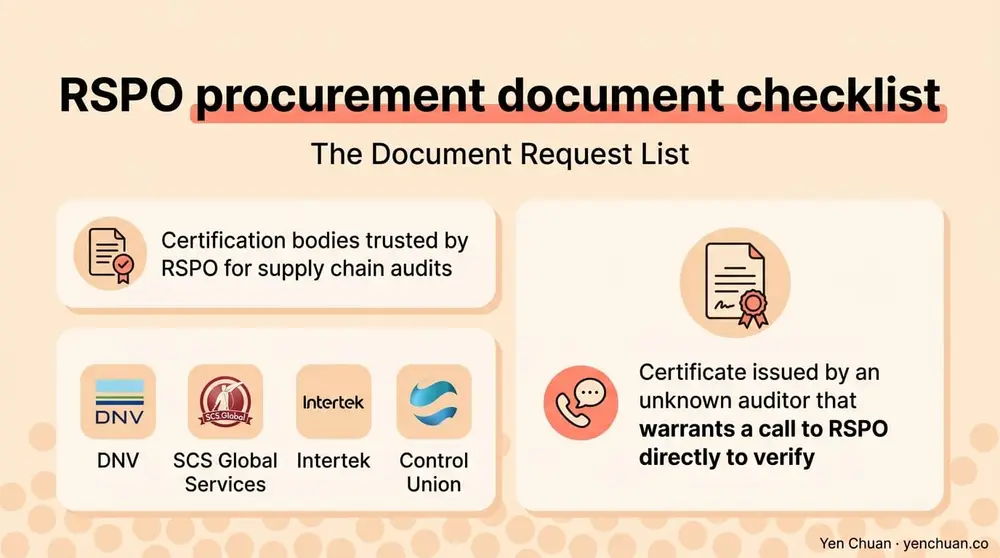

Articles / Business & sourcing
RSPO-Certified Ingredient Supplier Checklist
2026-04-11 · Sourcing, Industry Trends
Finding a supplier who claims "RSPO certified" takes a Google search. Finding one whose claim holds up under a retailer audit, an EUDR filing, or a chain franchise agreement takes a proper procurement process. The difference matters: a single unverified claim can pull a creamer batch out of a ready-to-drink line, delay a European shipment, or cost a multi-unit operator a supplier contract.
This guide is a procurement checklist for sourcing RSPO certified ingredients in 2026. It covers how to read an RSPO membership listing, which supply chain model fits your market, the exact documents to request, and the questions that separate genuine certification from marketing language.
What RSPO Certification Covers — and What It Does Not
The Roundtable on Sustainable Palm Oil (RSPO) certifies that palm oil and palm-derived ingredients come from producers meeting environmental and social criteria — no deforestation of primary forest, protection of High Conservation Value areas, worker rights, and community consent. The RSPO Principles and Criteria are the underlying standard.
What RSPO does not certify:
- Product quality (taste, texture, shelf life)
- Finished product composition (only the palm-derived inputs are in scope)
- Other sustainability attributes (carbon footprint, water use beyond standard criteria, packaging)
- Non-palm ingredients in a blended product
For bubble tea procurement, RSPO is most relevant for non-dairy creamers (which use palm kernel oil or hydrogenated palm oil), some powdered milk teas, and a subset of flavor carriers. Ingredients that do not contain palm derivatives do not need RSPO certification.
The Four Supply Chain Models — and Which Fits Your Market
RSPO recognizes four supply chain certification models. The choice between them is a procurement and labeling decision, not only an environmental one.
Identity Preserved (IP). Certified palm oil from a single mill is kept physically separate throughout the supply chain. Highest traceability, highest cost, typically 12 to 18% above conventional. Required for premium sustainability-led brands and the only model that lets a buyer name a specific plantation or mill in marketing.
Segregated (SG). Certified oil from multiple certified mills is pooled but kept separate from non-certified oil. Full physical traceability to certified origin. Premium 10 to 15%. The most common model for buyers requiring EUDR-ready sourcing without single-plantation specificity.
Mass Balance (MB). Certified and non-certified oil are mixed at the refinery. Certified volume is tracked administratively — total certified output cannot exceed certified input. Premium 3 to 8%. Practical for buyers who want to support RSPO sourcing without a full traceability burden, but not sufficient for EUDR filings to the EU market.
Book and Claim (Credits). Buyers purchase credits from RSPO-certified producers without receiving physical certified oil. Premium 1 to 3%. Useful for small buyers entering the system but cannot support any product label making a physical certified claim.

For U.S. and APAC buyers not exporting to the EU, Mass Balance is usually the best cost-to-credibility trade. For buyers selling into the European Union after December 2026, Segregated or Identity Preserved is effectively required because the EU Deforestation Regulation does not accept Mass Balance documentation.
For a deeper cost comparison against non-RSPO creamer, our RSPO vs Non-RSPO creamer analysis breaks down the premium by model and market.
How to Read an RSPO Member Listing
Every legitimate RSPO participant appears in the RSPO member directory. The listing tells a buyer three things that a supplier's sales deck often cannot:
- Membership type — Ordinary Member (producer, processor, manufacturer, retailer), Affiliate, or Supply Chain Associate. A "supply chain associate" is a small operator, not a certified plant.
- Certification scope — The listing shows which mills, refineries, or processing sites hold certification. A supplier can be an RSPO member without holding physical supply chain certification on the plant you are buying from.
- Annual Communication on Progress (ACOP) — RSPO members publish yearly reports on their certified volumes, progress, and commitments. A member who has not filed ACOP in the most recent year is non-compliant.
Before approving any supplier claim, buyers should open the RSPO directory, search the exact legal entity name, and confirm the site certificate, not only the membership. Misalignment between the legal entity on the invoice and the certified entity is a common issue.
The Document Request List
A complete RSPO procurement dossier for a bubble tea ingredient contains seven documents. Missing any of them is grounds to reject the supplier for regulated-market programs.
- RSPO Supply Chain Certification (SCCS) certificate for the processing site producing the ingredient, with certification body name and current expiration date
- RSPO member number for the parent legal entity, verifiable in the public directory
- Annual Communication on Progress (ACOP) filing for the most recent year
- Declaration of supply chain model (IP, SG, MB, or Book and Claim) applicable to your purchase
- Mass balance or segregated trade documents — certified volume balance reports showing certified input, output, and credits used in the quarter of your shipment
- Certificate of conformity from the certification body for the specific batch, where buyer requests
- EUDR due diligence statement (for EU-destined shipments) — geolocation of plantations, deforestation risk assessment, and traceability map
Certification bodies trusted by RSPO for supply chain audits include DNV, SCS Global Services, Intertek, and Control Union. A certificate issued by an unknown auditor warrants a call to RSPO directly to verify.

Questions to Ask Before You Buy
Use this list with any new RSPO-claiming supplier. Answers that are vague, delayed beyond five business days, or accompanied by outdated documents are signals to move on.
Corporate-level questions
- What is your RSPO member number and membership type?
- Which of your sites hold Supply Chain Certification?
- On what date does your SCCS certificate expire?
- Who is your certification body and when was your last audit?
- Have you filed ACOP for the current year?
Product-level questions
- Which supply chain model (IP, SG, MB, Book and Claim) applies to this specific ingredient SKU?
- What percentage of total palm-derived content in this SKU is certified?
- Can you provide a mass balance report for the quarter of my shipment?
- Is this product included in your EUDR readiness scope?
- Can you provide geolocation data for the source plantations?
Batch-level questions
- Will you issue a certificate of conformity with each shipment?
- What is your lead time to produce RSPO documentation on request?
- If you switch from MB to SG sourcing mid-year, how will that be communicated?
- Do you maintain segregated production runs, or do I need to commit to minimum volumes?
- What is your protocol if a certified mill loses certification mid-contract?
Suppliers who answer all fifteen in writing with attached documents are worth prioritizing. The question list itself signals to the supplier that you are procurement-ready, which usually improves pricing and service over time.
Cost Framework for Budgeting
Building an RSPO procurement budget requires understanding where the premium comes from:
| Supply Chain Model | Premium Range | EUDR Compliant | Best Fit |
|---|---|---|---|
| Book and Claim | 1–3% | No | Small buyers entering RSPO |
| Mass Balance | 3–8% | No | U.S./APAC non-EU export |
| Segregated | 10–15% | Yes | EU-bound products, major chains |
| Identity Preserved | 12–18% | Yes | Premium sustainability brands |
For a mid-size chain buying 5 tonnes of non-dairy creamer per month at roughly $3,200 per tonne non-RSPO, the annual cost impact ranges from $2,000 (Book and Claim) to $35,000 (Identity Preserved). Multiply by SKU count to see total program cost.
For smaller independent shops buying a few hundred kilograms monthly, the per-cup impact is usually under 2 U.S. cents even at Segregated pricing — immaterial at a $6 retail price. The real cost is administrative: setting up supplier onboarding, document storage, and audit support.
Integrating RSPO Sourcing With Other Procurement Requirements
RSPO rarely sits alone in a 2026 procurement program. Buyers increasingly stack certifications:
- RSPO + Vegan — Vegan creamers using RSPO palm oil are now standard in premium chains. See our vegan bubble tea ingredients checklist for the parallel audit framework.
- RSPO + Non-GMO — Non-GMO Project Verified palm products are available from a subset of certified suppliers. Premium adds 2 to 5%.
- RSPO + Halal / Kosher — Religious certifications intersect cleanly with RSPO but require separate filings.
- RSPO + Clean Label — The clean label procurement conversation runs parallel. See our clean label beverage ingredients guide for the broader ingredient audit.
For an operator building a new supplier base from scratch, our milk tea supplier guide covers the full vetting workflow, and our bubble tea supply guide for Taiwan, China, and Southeast Asia compares regional sourcing options.
Sources
- RSPO Principles and Criteria 2018
- RSPO Supply Chain Certification Standard
- EU Deforestation Regulation (EUDR) official site
- Grand View Research: Palm Oil Market Report 2024
- World Wildlife Fund: Sustainable Palm Oil
About Yen Chuan
Yen Chuan has been at the heart of Taiwan's bubble tea industry for over 20 years, supplying premium powders, syrups, tapioca pearls, and tea leaves to thousands of boba shops worldwide. With an in-house R&D lab and a commitment to quality ingredients, Yen Chuan is more than a supplier — we're your partner in the boba business. Our RSPO sourcing program covers non-dairy creamer, vegan creamer, and blended powder SKUs across Mass Balance and Segregated models, with EUDR-ready documentation available for European buyers.
Evaluating suppliers for an RSPO program and need documentation you can pass straight to a retailer or EU importer? Browse our RSPO-certified catalog or contact our sourcing team — we will deliver the full document dossier within five business days and support onboarding into your procurement system.
Frequently Asked Questions
Q: How do I verify a supplier's RSPO claim? A: Check the RSPO member directory for the supplier's legal entity and confirm the specific site holds Supply Chain Certification. Request the SCCS certificate and the Annual Communication on Progress filing, and verify the certifying body is recognized by RSPO.
Q: Which RSPO supply chain model do I need for EU exports? A: Segregated or Identity Preserved. The EU Deforestation Regulation does not accept Mass Balance documentation for products entering the EU market after December 2026 for large companies and June 2027 for small and medium enterprises.
Q: What is the cost premium for RSPO certified creamer? A: It depends on the supply chain model. Book and Claim adds 1 to 3%, Mass Balance 3 to 8%, Segregated 10 to 15%, and Identity Preserved 12 to 18% over non-certified equivalents. Most B2B bubble tea buyers use Mass Balance or Segregated.
Q: Do RSPO certified ingredients taste different? A: No. RSPO certifies sourcing and supply chain controls, not product formulation or sensory attributes. A certified and non-certified creamer with the same specifications will perform identically in a drink.
Q: What documents should I request from an RSPO supplier? A: At minimum request the SCCS certificate, RSPO member number, most recent ACOP filing, declaration of supply chain model, mass balance or segregated trade documents for your purchase quarter, certificate of conformity for specific batches, and an EUDR due diligence statement if you are exporting to the EU.